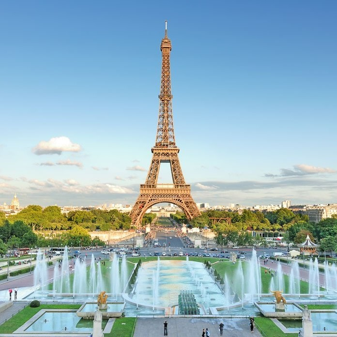
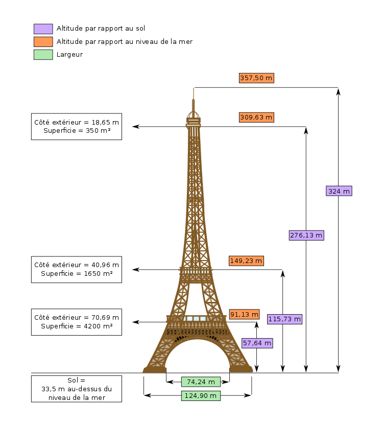

La tour Eiffel Écouter est une tour de fer puddlé de 324 mètres de hauteur (avec antennes) située à Paris, à l’extrémité nord-ouest du parc du Champ-de-Mars en bordure de la Seine dans le 7 arrondissement. Son adresse officielle est 5, avenue Anatole-France.
Les informations ci-dessous décrivent les principales données techniques de chaque étage, ainsi que les principales curiosités qui s'offrent au visiteur, une fois sur place.
